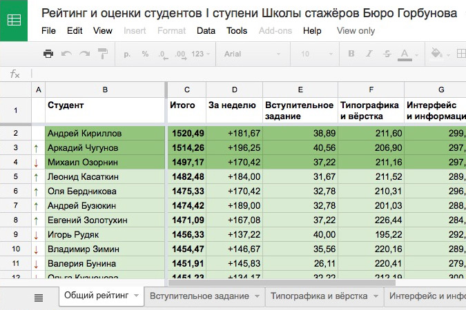

Школа стажеров Бюро Горбунова
В 2014 я стала присматриваться к деятельности Бюро Горбунова. Мне понравился их подход к работе, он был «тем самым» — без компромиссов, с высокой требовательностью к себе и постоянным самосовершенствованием. Летом они открыли набор в Школу стажеров, и я решила поступить.
Диплом дизайнера я получила в 2013 и сразу устроилась работать в рекламное агентство. Работала запоями и однажды почувствовала, что без последовательного обучения совершенствоваться всё сложнее.
Процесс
По расписанию школы еженедельно в общей папке на Google-диске появляются лекции. В лекции видео с живого курса, текст-расшифровка, список литературы и тесты с заданиями. Учиться можно в любое время, главное успеть сдать тесты и задания до дедлайна — обычно это пятница, 23:59. Уважительных причин опоздания нет. «Делал, но не сделал» — не про бюро. Баллы просроченного (но сданного) теста или задания делят пополам. Из школы исключают за трижды нарушенный дедлайн.
Баллы нужны для отслеживания своей позиции в рейтинге. На 1 ступени попадание в топ-30 дает возможность учиться на 2 ступени, а в топ-3 — учиться на ней же бесплатно.
Тесты и задания
Тест сдается один раз, заполняется в гугл-форме. Через час приходит письмо с баллами и листинг неправильных ответов без указания правильных — школа рассчитана на высшую степень самостоятельности и сознательности стажеров.
Задание выгружается в специальную папку. Задания вплоть до курсовой не проверяют (ставят максимум баллов), их качество прямо пропорционально желанию чему-то научиться. В конце учебы курсовая, ее надо делать осмысленно, потому что оценка влияет на возможность продолжить обучение на 2 ступени.
Чему учат
В школе 6 дисциплин: Типографика и вёрстка, Интерфейс и информация, Переговоры и отношения, Дизайн и право, Текст и редактура, Управление и результаты.
Типографика и вёрстка
Артем Горбунов рассказывает об основах вёрстки, вводит понятия и по кусочкам разбирает процесс проектирования страницы с текстом, иллюстрациями и другими базовыми элементами. Заканчивает курс рассказом о том, на что опереться русскому дизайнеру. Все материалы есть на сайте бюро, добавляются ссылки и дополнительная литература.
Интерфейс и информация
Илья Бирман ведёт самый интересный для меня и сам по себе обширный курс. Не просто про элементы, гайдлайны, визуальную целостность, глубже — про UI для людей, психологию новичка, технозависимость, информативность и отсутствие мусора, слои, параллельное изложение, синтаксис (на примере интерфейсов Яндекса) и, конечно, закон Фиттса. Границы черепа на одном курсе Бирмана расширяются до уровня адекватного UI дизайнера.
Переговоры и отношения
Илья Синельников на основе книг Джима Кэмпа и принципов Бюро Горбунова учит общаться с людьми. Причем, не только с клиентами — общаться в любой ситуации. Полезность курса для меня 200%, личность самого Ильи, его способ доносить информацию и общаться вдохновляет и вызывает чувство «хочу также». Только ради Переговоров стоило учиться в школе.
Дизайн и право
Владимир Беляев открывает тёмную сторону дизайна — читает курс о правовых вопросах. Полезно и без воды о том, кому принадлежат права на произведение автора, что можно использовать в своих проектах, где граница между плагиатом и оригинальностью, в чем реальная разница между ИП и ООО, как основать компанию, считать бухгалтерию, вести себя в суде и уладить конфликт без него. В университете нам семестр читали Авторское право, но Владимир за пару месяцев рассказывает подробнее и актуальнее.
Текст и редактура
Максим Ильяхов побил все рекорды по инфонасыщенности курса. Файл лекции однажды включал 44 страницы, не считая литературы и заданий. Максим дал так много информации, что я долго не понимала, почему он не сделает школу только для редакторов. В Бюро, видимо, тоже об этом задумались и придумали школу редакторов. До курса мне казалось, что я неплохо знаю родной язык. В процессе понимаешь, что редактура — это отдельный русский язык. Ильяхов раскрывает информационный стиль, говорит о стоп-словах, информативности, анатомии абзаца, фальши, честности, игре. Он учит писать текст для лендингов, излагать мысли параллельно, писать рассылки. Рассказывает о работе редактора, определении аудитории, цели и задачи. В общем, это мега-курс. Если вы редактор или копирайтер и чего-то из перечисленного не знаете — добро пожаловать в школу.
Управление и результаты
Всё про менеджмент, самоорганизацию, работу в офисе и удаленно в школе объясняет Николай Товеровский. Как вести проект, флексить, согласовывать, работать в путешествии, планировать не впритык, дизайнерам управлять разработкой (в бюро нет менеджеров), перевести компанию на ФФФ, какие бывают творцы, какая разница между «сделать» и «делать». Курс шёл в удовольствие из-за ненавязчивой подачи и разнообразия заданий. Во время лекции об удаленной работе я была в Германии с ноутбуком и сразу потестила актуальность сведений. Курс заканчивается золотой мыслью — возможно всё. Можно использовать любые техники, способы, методы — главное, не бояться и делать как получается. Когда возникает сложная задача, одна эта мысль способна вытянуть что угодно.
Что хорошо бы сделать до поступления
- Прочитать литературу на странице школы, с которой, по-хорошему должен быть знаком любой дизайнер.
- Завести аккаунт в фейсбуке. Общались мы в основном в группе студентов школы в фейсбуке, анонсы заданий получали в Google+ (ныне несуществующей соцсети).
- Сходить на живые советы или почитать советы. Также, у Бюро появились свои цифровые книги, доступные по подписке. Всё это помогает понять образ мыслей бюрошников.
Отступать нельзя поступать
Поступать или не поступать — прежде хорошо подумать. Спросить себя, надо ли это действительно. Потому что в ближайшие полгода школа отожрет от 50 до 80% времени. Для поступления необходимы условия:
- сильная мотивация,
- организованность,
- самостоятельность,
- упорство,
- дотошность,
- любовь к своей работе (информационному дизайну и интерфейсам),
- согласие с образом мыслей бюро (для понимания достаточно почитать советы),
- умение не поддаваться панике,
- умение доводить дела до конца вопреки обстоятельствам,
- возможность поставить школу на 1 место в жизни.
Последний пункт особенно важен. Обратной связи на 1 этапе почти нет, всё изучать и перепроверять самому. Завалишь тест, придется перешагнуть через неуверенность и докопаться, что же не так. Плюс в том, что всегда можно задать вопрос в почту лекторам школы, минус (или неочевидный плюс) — они не разжёвывают.
Впечатления
До школы стажеров я не пробовала основательно учиться онлайн. Совмещать с активной, часто авральной работой можно в режиме «все свободное время и пару часов сна трачу на школу». Поначалу тяжело, потом привыкаешь.
Училась в 2012 у Вадима Паясу, но его курсы короткие и бодрящие, можно собраться и неделю похардкорить.
Мой главный вывод — важно идти ровно всё время обучения. Нагрузка всегда равномерно большая, надо планировать время на учёбу. Вариант за час до дедлайна прочитать спешно все материалы и сдать тесты и задания в долгосрочной перспективе работает плохо. Знания усваиваются кое-как, а в следующие недели на них накладываются другие, и пробелы всплывают на первой же проверке.
В целом, учиться мне понравилось. Не хватало живого общения, но это решается личной предприимчивостью. Я заткнула дыры, оставленные высшим образованием, познакомилась с коллегами и открыла близкие дизайну дисциплины. Из всех курсов самым новым для меня были «Переговоры и отношения». Если с типографикой, интерфейсом и даже правом я сталкивалась в институте или на работе, то переговоры были тем самым слепяще-белым пятном, которое хотелось заполнить. Расслабленность и уверенность преподавателя, Ильи Синельникова, — вот чему действительно круто было учиться.
В середине курса решила, что на вторую ступень не пойду. Там начинается практика, судя по принципам бюро, серьезная как реальная работа. Я же решила развиваться дальше в полевых условиях, поскольку накопила и систематизировала желанную теоретическую базу. Думаю, наши пути с бюрошниками еще пересекутся, так как мне нравятся их принципы.
После окончания обучения выдали сертификат. А через два месяца я посмотрела на старые проекты и поняла, что польза от учебы есть. Преподавателям спасибо.